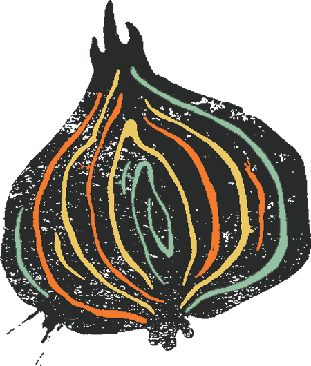

A Hagyma egy gyors, könnyen tanulható, 2-től 12 főig játszható, ön- és társismereti beszélgetős kártyajáték.
A Hagyma kártyajáték megalkotása során az a cél vezérelte a tervezőket, hogy egy könnyed, ön- és társismereti társasjátékhoz hogyan lehet olyan kompetitív szabályrendszert kitalálni, amely a játékosok közti interakciókkal elősegíti egymás és saját magunk jobb megismerését. Továbbá az is deklarált cél volt, hogy ugyanolyan élményt adjon két játékos esetén, mint egy nagyobb társaságban játszva.
A kezdőjátékos a három különböző színű húzópakliból felfordít egy-egy tulajdonság-kártyát, és maga elé helyezi azokat. Ezt követően megpróbálja eldönteni, hogy milyen sorrendben igazak rá a felfordított tulajdonságok, és ennek megfelelően a kezében lévő három hagyma-kártyát képpel lefelé egymásra helyezi: a leginkább rá jellemző tulajdonság-kártyához tartozó hagyma-kártyát legalulra, a legkevésbé jellemző kártyát pedig legfelülre.
Ezzel párhuzamosan a többi játékos is megpróbálja kitalálni, hogy az aktív játékos milyen prioritási sorrendet állíthatott fel, és ennek megfelelően ők is sorba rendezik a kártyáikat, képpel lefelé maguk elé. Ha az összes játékos végzett, egyszerre felfordítják a lapjaikat, a legfelső lappal kezdve.
Pontozás:
Az a játékos, aki eltalálta a kezdőjátékos sorrendjét, 3 pontot, aki csak az utolsó lapot, 1 pontot kap. A pontozás opcionális, a játék játszható pontozás nélkül is.
A játék vége:
A játék addig tart, amíg minden játékos sorra nem került kétszer. A legtöbb pontot gyűjtő játékos nyer.
Rendeld meg a saját példányodat most a Pagony webshopjában, vagy a boltok egyikében!
GLS futárszolgálattal, MPL futárszolgálattal, GLS, MPL vagy Pick Pack Pont átvevőponton vagy átveheted valamelyik Pagony boltban. A GLS futárszolgálat, GLS csomagpont és Pick Pack Pont esetén a 2-3 napos szállítási idő azon termékeinkre érvényes, amelyek készletünkön vannak. Amint átadtuk az árut a szállítónak, egy elektronikus levélben üzenetet küldünk. A MPL esetében hosszabb szállítási időre lehet számítani. Bolti átvétel esetén szintén 2-3 napos szállítási idővel számolhatsz, ha minden termékünk készleten van a rendelésed feladásakor. Felhívjuk a figyelmed, hogy bolti csomagátvétel esetében azonban csak bankkártyás előreutalásra van lehetőséged, tehát a rendelés feladásakor kell kifizetned a csomagot.